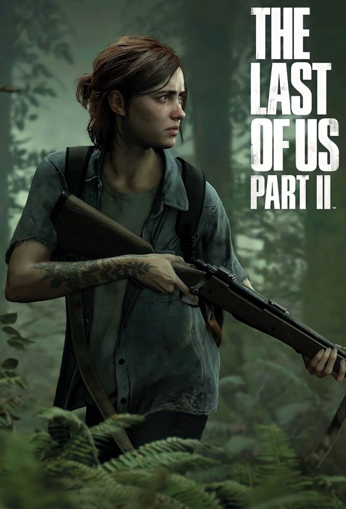
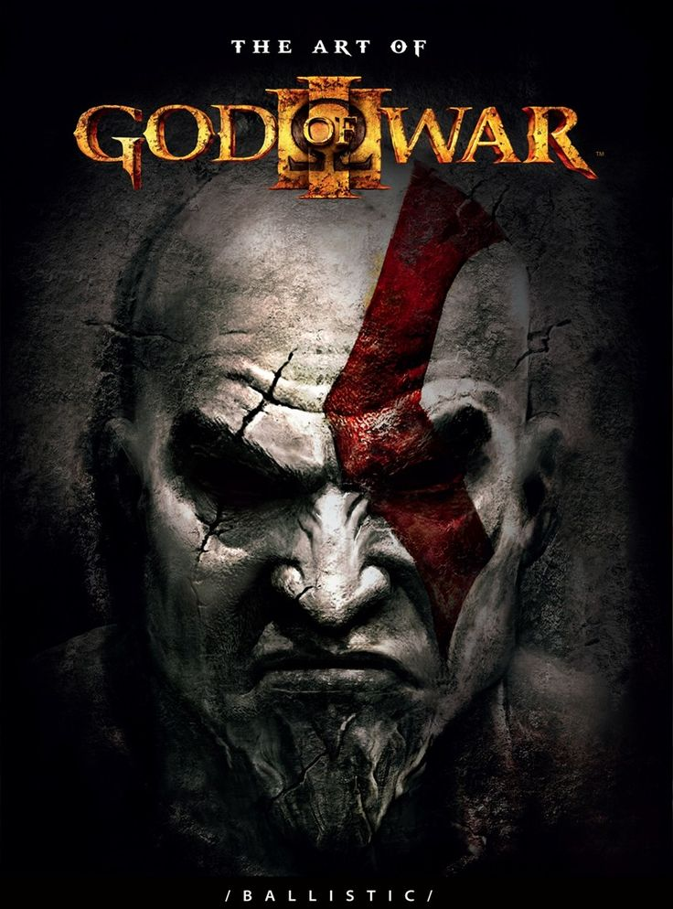

1-red dead redemption 2

1899 a gang of outlaws led by Dutch Van Der Linde fail a robbery and now need to fight against the law and travel across the wild country of America and when problems threaten to tear the gang apart, lead enforcer Arthur Morgan must choose between his ideals or the man who raised him.
Rate:10/10
2-The Last Of Us
Season guide. The Last of Us takes place 20 years after modern civilization has been destroyed. In this action-adventure series, Joel (Pedro Pascal), a hardened survivor, is hired to smuggle Ellie (Bella Ramsey), a 14-year-old girl, out of an oppressive quarantine zone.
Rate:9/10
3-Uncharted 4: A Thief's End

On the hunt for Captain Henry Avery's long-lost treasure, Sam and Drake set off to find Libertalia, the pirate utopia deep in the forests of Madagascar. UNCHARTED 4: A Thief's End takes players on a journey around the globe, through jungle isles, far-flung cities and snow-capped peaks on the search for Avery's fortune.
Rate:8/10
4-Assassin's Creed Unity

The main story is set in Paris during the French Revolution from 1789 to 1794, and follows Assassin Arno Dorian and his efforts to expose the true powers behind the Revolution, while seeking revenge against those responsible for his adoptive father's murder.
Rate:7/10
5-ELDEN RING

The Elden Ring is a conduit of sorts that is at the centre of the power of the Erdtree, which blesses the Lands Between with immortality, as a result. The world is kept in balance, primarily, by Queen Marika, one of the most powerful immortals, who went on to have a few children, who are classed as demi-gods.
Rate:6/10
6-dark souls III

Introduction. Dark Souls 3 takes place in a transitory place, revolving around the first flame and the cycle of fire and dark. You play as a protagonist whose goal is to find and return the five Lords of Cinder to their thrones at Firelink Shrine in order to link the flame again.
Rate:5/10
7-Anno 1800

Anno 1800 takes place in the 19th century at the dawn of the Industrial Age. Like other Anno games, Anno 1800 is a city-building and strategy game. While it is set in the context of colonial trade, the featured architecture is Victorian Era and the economic engine is factory labor.
Rate:4/10
8-Minecraft

In Minecraft, players explore a blocky, procedurally generated, three-dimensional world with virtually infinite terrain. Players can discover and extract raw materials, craft tools and items, and build structures, earthworks, and machines.
Rate:3/10
9-Grand Theft Auto V

Set within the fictional state of San Andreas, based on Southern California, the single-player story follows three protagonists—retired bank robber Michael De Santa, street gangster Franklin Clinton, and drug dealer and gunrunner Trevor Philips—and their attempts to commit heists while under pressure from a corrupt
Rate:2/10
10-God of War III
Reigniting the Great War, Kratos ascends Mount Olympus until he is abandoned by the Titan Gaia. Guided by Athena's spirit, Kratos battles monsters, gods, and Titans in a search for Pandora, without whom he cannot open Pandora's Box, defeat Zeus, and end the reign of the Olympian gods to have his revenge.